蚁群 / FIELD ROBOTICSDESIGN SERIES 01
One rescue.
Four kinds of help.
A modular fleet for disaster search and rescue. Distinct tools make every role visible; interchangeable chassis make terrain capability visible. Fifteen original 3D models, each with named animation clips.
01 / NONEWHEELED CHASSIS
Scout
Find casualties through an occluded camera. A compact stereo head makes the scout readable at a glance.
02 / SCOOPTRACKED CHASSIS
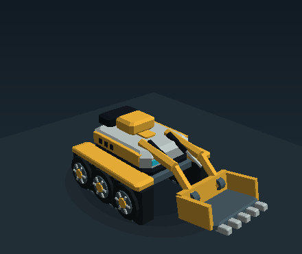
Digger
Uncover buried casualties. Reinforced lift arms, hydraulic rods and a toothed bucket show the excavation stroke.
03 / GRIPPERLEGGED CHASSIS
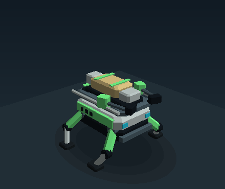
Carrier
Carry casualties to collection points. Padded jaws secure a visible rescue cradle and blanket.
04 / ANTENNAROTOR CHASSIS
Relay
Keep the swarm in contact. A telescopic mast and articulated panel antenna distinguish a relay holding its post.
The full fleet
Four purposes × four chassis. Carriers stay on the ground: rotor units cannot lift casualties. Select any model to download its editable, self-contained GLB.
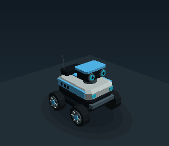
Scout wheeled2,032 triangles · 4 clips ↗
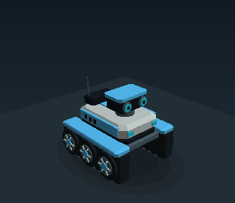
Scout tracked3,692 triangles · 4 clips ↗
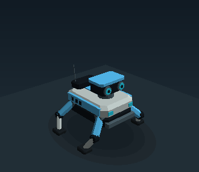
Scout legged1,780 triangles · 4 clips ↗
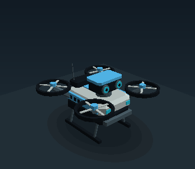
Scout rotor2,156 triangles · 4 clips ↗
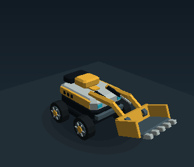
Digger wheeled2,368 triangles · 4 clips ↗
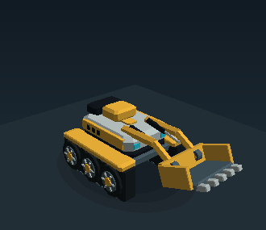
Digger tracked4,028 triangles · 4 clips ↗
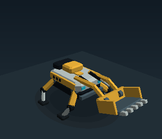
Digger legged2,116 triangles · 4 clips ↗
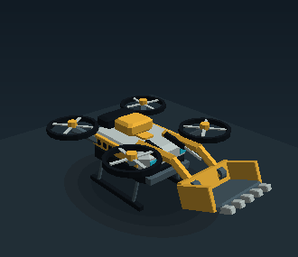
Digger rotor2,492 triangles · 4 clips ↗
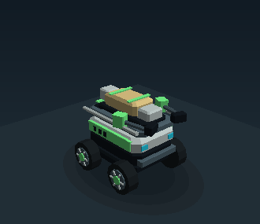
Carrier wheeled2,256 triangles · 4 clips ↗
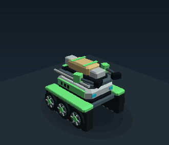
Carrier tracked3,916 triangles · 4 clips ↗
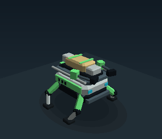
Carrier legged2,004 triangles · 4 clips ↗
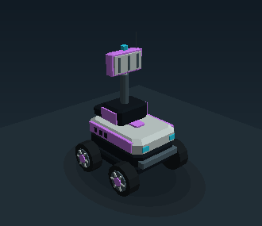
Relay wheeled2,072 triangles · 4 clips ↗
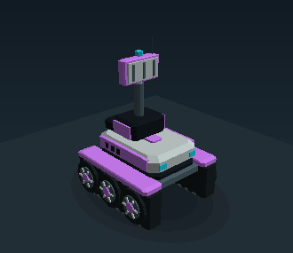
Relay tracked3,732 triangles · 4 clips ↗
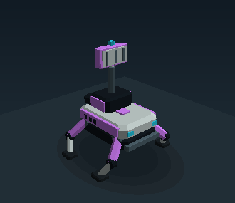
Relay legged1,820 triangles · 4 clips ↗
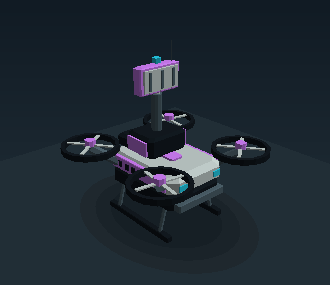
Relay rotor2,196 triangles · 4 clips ↗
These are studio animation previews. In the live dashboard, measured travel drives wheels and legs, excavation telemetry drives buckets, and carrying activity controls the rescue load. Rotor mechanisms animate at ground height because the dashboard has no airborne telemetry.